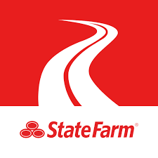

Research
First I conducted research via interviews by asking current users questions about their experiences with the app and their overall satisfaction.
After that I built customer Journey Maps and did more research using external sights.
Here is a link to my secondary research:
Secondary Research
